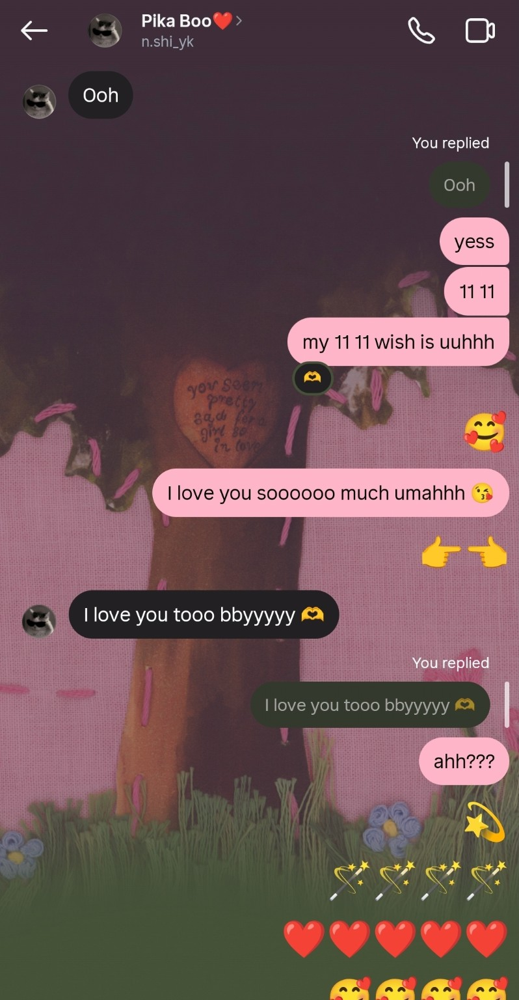

Page 02 · A memory I keep
The First “I Love You” ❤️
There was a moment when three little words made everything feel a little more beautiful.

That little moment…
I still remember the feeling behind those words. 🥹❤️
“I love you” stopped being just three words. It became us.
Nishika, mujhe aaj bhi yaad hai woh moment… jab pehli baar tumne mujhe “I love you too” bola tha. 🥹❤️
Sach bolu toh uss ek line ne mere dil ko alag hi sukoon diya tha. Tumhare liye shayad woh bas words the, lekin mere liye woh meri favourite memories mein se ek ban gaye.
Aaj bhi jab tum “I love you” bolti ho na, dil mein wahi pehli wali feeling aa jaati hai — thodi si happiness, thoda sa blush aur bohot saara pyaar. 🫶🏻
— Rachit ❤️